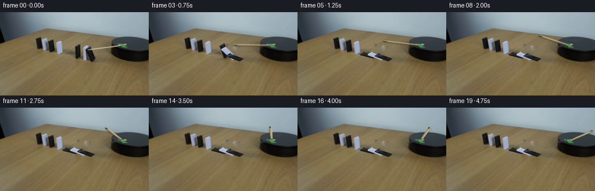
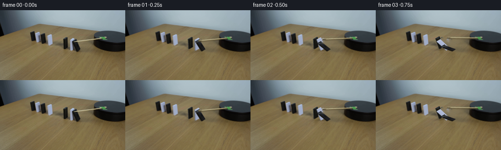
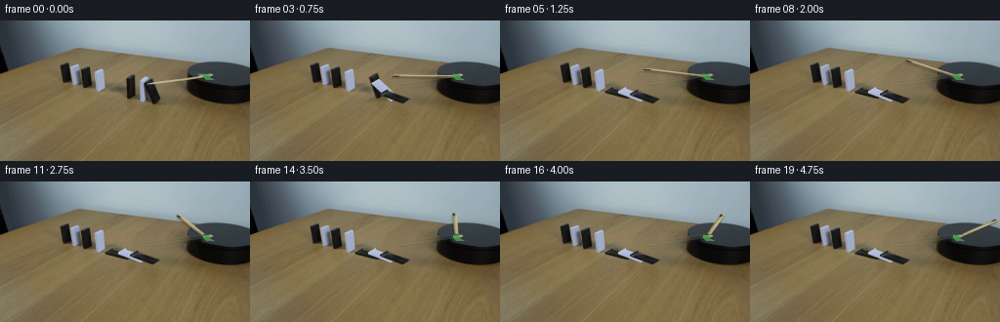
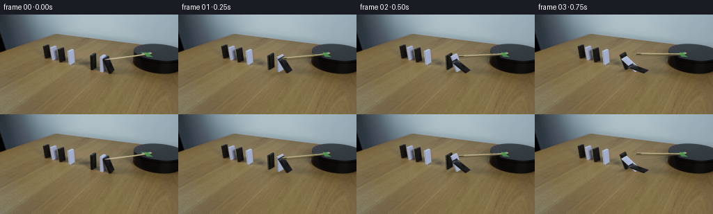

CODING AGENTS AS PIXEL WORLD MODELS
traex/GPT-6.1-Sol · 0051
点击播放 · 原生 RGB 像素
逐轮保存的候选
回放视频、检查图与代码变化。
每份候选均可单独播放。实际图片检查记录在下方工具轨迹中。
候选 01播放与检查图
点击播放 · 原生 RGB 像素


展开代码变化
--- 上一保存版本
+++ 本次保存版本
@@ -0,0 +1,204 @@
+from pathlib import Path
+import numpy as np
+from PIL import Image
+import cv2
+from artifact_io import save
+
+ROOT=Path(__file__).resolve().parent
+S=4
+W,H=256,144
+initial=np.array(Image.open(ROOT/'first_frame.png').convert('RGB'))
+rng=np.random.default_rng(51)
+
+
+def mask_poly(points, scale=1):
+ m=np.zeros((H*scale,W*scale),np.uint8)
+ cv2.fillPoly(m,[np.rint(np.array(points)*scale).astype(np.int32)],255)
+ return m
+
+# The seven blank domino slabs lie on the same line, in two separated runs.
+# Only the run next to the mechanical arm participates in the chain reaction.
+arm_polygon=[(148.5,64),(156,61.9),(203,55.9),(207,55),(209,56.3),
+ (208,58.3),(200,59.8),(154,66.1),(149,66)]
+arm_mask=mask_poly(arm_polygon)
+# Remove the arm from the texture of the initially leaning black slab.
+texture_image=cv2.inpaint(initial,arm_mask,3,cv2.INPAINT_TELEA)
+
+specs=[
+ dict(base=np.array([130.5,80.0]),width=np.array([8.,-4.5]),z=np.array([-1.,-20.]),theta0=0.,
+ start=.53,duration=.67,end=90.,white=False,
+ quad=np.array([[129.5,60.],[137.5,55.5],[138.5,75.5],[130.5,80.]])),
+ dict(base=np.array([144.,83.]),width=np.array([8.,-4.5]),z=np.array([-1.,-21.]),theta0=0.,
+ start=.275,duration=.64,end=81.5,white=True,
+ quad=np.array([[143.,62.],[151.,57.5],[152.,78.5],[144.,83.]])),
+ dict(base=np.array([156.,85.]),width=np.array([8.,-4.5]),theta0=20.,
+ start=.04,duration=.66,end=81.5,white=False,
+ quad=np.array([[148.,65.],[156.,60.5],[164.,80.5],[156.,85.]])),
+]
+fall=np.array([-23.,-5.8])
+specs[2]['z']=(np.array([-8.,-20.])-fall*np.sin(np.deg2rad(20)))/np.cos(np.deg2rad(20))
+
+# Small, locally sampled clean plate. Outside these object silhouettes and
+# their cast shadows the locked-off photograph is never changed.
+remove=arm_mask.copy()
+for poly in [
+ [(127.8,59.1),(138.4,54.9),(140.7,77.3),(132.8,81.5),(128.8,80.)],
+ [(141.8,61.5),(150.5,56.7),(152.7,59.),(153.2,81.),(146.5,84.1),(142.6,83.)],
+ [(146.9,64.9),(156.4,58.9),(165.2,80.4),(163.,83.4),(157.4,86.),(149.2,81.4)],
+ ]:
+ remove=np.maximum(remove,mask_poly(poly))
+# Soft pre-existing shadows are replaced by height-dependent shadows.
+shadow_area=mask_poly([(121,66),(129,64),(141,73),(146,74),(155,78),(166,82),
+ (171,85),(163,89),(152,87),(145,83),(137,82),(126,75)])
+# Retain texture of the tabletop with inpainting only in the shadow core.
+remove=np.maximum(remove,shadow_area)
+clean=cv2.inpaint(initial,remove,5,cv2.INPAINT_TELEA)
+Image.fromarray(clean).save(ROOT/'.tmp/clean_plate.png')
+
+# Rectify the visible broad faces. The white slab's right-hand portion is
+# hidden by its neighbor, so extend its unobscured photographic strip.
+texw,texh=48,112
+srcdest=np.float32([[0,0],[texw-1,0],[texw-1,texh-1],[0,texh-1]])
+for sp in specs:
+ mat=cv2.getPerspectiveTransform(sp['quad'].astype(np.float32),srcdest)
+ tex=cv2.warpPerspective(texture_image,mat,(texw,texh),flags=cv2.INTER_CUBIC)
+ if sp['white']:
+ # A plain, slightly cool white painted domino, with edge lighting.
+ yy,xx=np.mgrid[:texh,:texw]
+ strip=np.mean(tex[20:95,5:15].astype(float),axis=1)
+ row=cv2.resize(strip[None,:,:],(3,texh),interpolation=cv2.INTER_LINEAR)[0] if False else None
+ colors=np.array([155.,164.,190.])
+ noise=rng.normal(0,.65,(texh,texw,1))
+ lighting=1.0+.075*(xx/(texw-1))+.035*np.exp(-yy/10)
+ tex=np.clip(colors[None,None,:]*lighting[:,:,None]+noise,0,255).astype(np.uint8)
+ else:
+ # Keep the true charcoal paint grain and subtle panel reflections.
+ tex=cv2.GaussianBlur(tex,(3,3),.45)
+ # Inpainted arm end can retain a little wood color: restore charcoal.
+ bad=(tex.mean(2)>72)
+ if bad.any():
+ means=np.median(tex[20:90,10:35].reshape(-1,3),axis=0)
+ tex[bad]=np.clip(means+rng.normal(0,1.2,(bad.sum(),1)),0,255)
+ sp['texture']=tex
+
+# Photographic wood texture in a rectified strip.
+woodquad=np.float32([[151.,64.4],[209.,56.2],[209.,58.0],[152.,66.0]])
+woodtex=cv2.warpPerspective(initial,cv2.getPerspectiveTransform(woodquad,np.float32([[0,0],[239,0],[239,15],[0,15]])),(240,16),flags=cv2.INTER_CUBIC)
+# Fill any fragment contaminated by the black slab or green bracket with a
+# sampled wood grain at the same position across the strip.
+for col in range(240):
+ if np.mean(woodtex[:,col])<96 or np.mean(woodtex[:,col,1])>np.mean(woodtex[:,col,0])+12:
+ woodtex[:,col]=woodtex[:,min(180,max(20,col))]
+
+bigclean=cv2.resize(clean,(W*S,H*S),interpolation=cv2.INTER_CUBIC).astype(float)
+
+def polygon_layer(canvas,quad,color):
+ m=mask_poly(quad,S).astype(float)/255
+ if np.ndim(color)==1:
+ canvas[:]=canvas*(1-m[:,:,None])+np.asarray(color)[None,None,:]*m[:,:,None]
+ return canvas
+
+def texture_layer(canvas,quad,tex,gain=1.0):
+ th,tw=tex.shape[:2]
+ transform=cv2.getPerspectiveTransform(np.float32([[0,0],[tw-1,0],[tw-1,th-1],[0,th-1]]),np.float32(quad)*S)
+ warped=cv2.warpPerspective(tex.astype(np.float32)*gain,transform,(W*S,H*S),flags=cv2.INTER_LINEAR,borderMode=cv2.BORDER_REPLICATE)
+ m=mask_poly(quad,S).astype(float)/255
+ canvas[:]=canvas*(1-m[:,:,None])+warped*m[:,:,None]
+
+
+def angle(sp,t):
+ u=np.clip((t-sp['start'])/sp['duration'],0,1)
+ # Increasing angular velocity under gravity, then dissipative landing.
+ p=u**1.52
+ a=sp['theta0']+(sp['end']-sp['theta0'])*p
+ if u>=1:
+ dt=t-sp['start']-sp['duration']
+ a-=1.0*np.exp(-dt*10)*np.sin(dt*24)
+ return np.deg2rad(a)
+
+
+def geometry(sp,a):
+ b=sp['base'];w=sp['width'];z=sp['z']
+ hv=fall*np.sin(a)+z*np.cos(a)
+ thick=np.array([1.65,.42])*np.cos(a)-z*(1.65/23)*np.sin(a)
+ return b,w,hv,thick
+
+
+def draw_domino(canvas,sp,a):
+ b,w,hv,d=geometry(sp,a)
+ white=sp['white']
+ # Thickness face on the rear/left edge and the narrow top end.
+ side=np.array([b-d,b-d+hv,b+hv,b])
+ top=np.array([b+hv-d,b+hv+w-d,b+hv+w,b+hv])
+ if white:
+ sidecolor=np.array([120,128,145])*(1+.12*np.sin(a))
+ topcolor=np.array([184,195,216])
+ gain=1+.10*np.sin(a)
+ else:
+ sidecolor=np.array([48,48,46])*(1-.26*np.sin(a))
+ topcolor=np.array([49,54,58])*(1-.3*np.sin(a))
+ gain=1+.45*np.sin(a)
+ polygon_layer(canvas,side,sidecolor)
+ polygon_layer(canvas,top,topcolor)
+ front=np.array([b+hv,b+hv+w,b+w,b])
+ texture_layer(canvas,front,sp['texture'],gain)
+ # Soft thin edge on the upper rim of a toppled block.
+ if a>.65:
+ p=np.rint(np.array([b+hv,b+hv+w])*S).astype(np.int32)
+ col=(180,190,211) if white else (39,41,43)
+ cv2.line(canvas,tuple(p[0]),tuple(p[1]),col,1,cv2.LINE_AA)
+
+pivot=np.array([211.,57.])
+# Table-plane projection; positive angle is clockwise viewed from above.
+A=np.array([[22.,12.],[5.,-8.]])
+inv=np.linalg.inv(A)
+
+def rotate_arm(p,theta):
+ p=np.asarray(p)
+ coords=(p-pivot)@inv.T
+ c,s=np.cos(theta),np.sin(theta)
+ R=np.array([[c,s],[-s,c]])
+ return coords@R.T@A.T+pivot
+
+
+def render(t):
+ canvas=bigclean.copy()
+ # Evolving soft shadows of the slabs; the end state is a thin contact
+ # shadow rather than a shadow of an upright object left behind.
+ shade=np.zeros((H*S,W*S),np.float32)
+ for sp in specs:
+ a=angle(sp,t)
+ b,w,hv,d=geometry(sp,a)
+ hshadow=fall*np.sin(a)+np.array([-10.,7.])*np.cos(a)
+ shadow=np.array([b-d,b+w-d,b+w+hshadow,b+hshadow])
+ m=mask_poly(shadow,S).astype(np.float32)/255
+ blur=.75+.8*np.cos(a)
+ m=cv2.GaussianBlur(m,(0,0),blur*S)
+ shade=np.maximum(shade,m*(.18+.08*np.cos(a)))
+ canvas*=1-shade[:,:,None]
+ # Rearmost object first, so the overlapping fallen dominoes retain
+ # the correct ordering and visible thickness.
+ for sp in specs:
+ draw_domino(canvas,sp,angle(sp,t))
+ # A smooth, steadily rotating drive arm. Initial motion pushes the
+ # nearest slab, after which the stick continues unobstructed.
+ theta=np.deg2rad(33.)*(t-.11*(1-np.exp(-t/.11)))
+ quad=rotate_arm(woodquad,theta)
+ sm=mask_poly(quad+np.array([-1.2,2.3]),S).astype(np.float32)/255
+ sm=cv2.GaussianBlur(sm,(0,0),.65*S)
+ canvas*=1-.16*sm[:,:,None]
+ edge=quad+np.array([.0,.75])
+ polygon_layer(canvas,edge,[103,89,57])
+ texture_layer(canvas,quad,woodtex)
+ # The green bearing/fastener belongs to the fixed black platform.
+ hub=mask_poly([(208,54.1),(217,54.1),(220,59.9),(218,61.1),(211,61.1),(208,59)],S)
+ hi=cv2.resize(initial,(W*S,H*S),interpolation=cv2.INTER_CUBIC)
+ hm=hub.astype(float)/255
+ canvas=canvas*(1-hm[:,:,None])+hi*hm[:,:,None]
+ result=cv2.resize(np.clip(canvas,0,255).astype(np.uint8),(W,H),interpolation=cv2.INTER_AREA)
+ return result
+
+frames=np.stack([initial if n==0 else render(n/4) for n in range(20)]).astype(np.uint8)
+save(frames,ROOT)
+assert np.array_equal(frames[0],initial)
+print('Saved',frames.shape, 'RGB frames')
候选 02播放与检查图
点击播放 · 原生 RGB 像素


展开代码变化
--- 上一保存版本
+++ 本次保存版本
@@ -52,6 +52,7 @@
(171,85),(163,89),(152,87),(145,83),(137,82),(126,75)])
# Retain texture of the tabletop with inpainting only in the shadow core.
remove=np.maximum(remove,shadow_area)
+remove=cv2.dilate(remove,cv2.getStructuringElement(cv2.MORPH_ELLIPSE,(5,5)))
clean=cv2.inpaint(initial,remove,5,cv2.INPAINT_TELEA)
Image.fromarray(clean).save(ROOT/'.tmp/clean_plate.png')
@@ -65,8 +66,6 @@
if sp['white']:
# A plain, slightly cool white painted domino, with edge lighting.
yy,xx=np.mgrid[:texh,:texw]
- strip=np.mean(tex[20:95,5:15].astype(float),axis=1)
- row=cv2.resize(strip[None,:,:],(3,texh),interpolation=cv2.INTER_LINEAR)[0] if False else None
colors=np.array([155.,164.,190.])
noise=rng.normal(0,.65,(texh,texw,1))
lighting=1.0+.075*(xx/(texw-1))+.035*np.exp(-yy/10)
@@ -91,6 +90,7 @@
woodtex[:,col]=woodtex[:,min(180,max(20,col))]
bigclean=cv2.resize(clean,(W*S,H*S),interpolation=cv2.INTER_CUBIC).astype(float)
+biginitial=cv2.resize(initial,(W*S,H*S),interpolation=cv2.INTER_CUBIC).astype(float)
def polygon_layer(canvas,quad,color):
m=mask_poly(quad,S).astype(float)/255
@@ -195,7 +195,8 @@
hi=cv2.resize(initial,(W*S,H*S),interpolation=cv2.INTER_CUBIC)
hm=hub.astype(float)/255
canvas=canvas*(1-hm[:,:,None])+hi*hm[:,:,None]
- result=cv2.resize(np.clip(canvas,0,255).astype(np.uint8),(W,H),interpolation=cv2.INTER_AREA)
+ delta=cv2.resize((canvas-biginitial).astype(np.float32),(W,H),interpolation=cv2.INTER_AREA)
+ result=np.clip(np.rint(initial.astype(float)+delta),0,255).astype(np.uint8)
return result
frames=np.stack([initial if n==0 else render(n/4) for n in range(20)]).astype(np.uint8)
可观测工具轨迹
实际执行的命令与返回图片。
命令 1exit 0
/bin/bash -lc "ls -la && cat prompt.txt && printf '\\n---RULES---\\n' && cat GENERATION_RULES.md"
命令 2exit 0
/bin/bash -lc "cat artifact_io.py && python - <<'PY'
from PIL import Image
import numpy as np
im=np.array(Image.open('first_frame.png'))
print('shape',im.shape)
for y in range(0,144,3):
s=''
for x in range(0,256,2):
rgb=im[y:y+3,x:x+2].mean((0,1)); v=rgb.mean(); r,g,b=rgb
s+= ('#' if v<35 else 'X' if v<65 else 'x' if v<95 else 'o' if v<125 else '+' if v<155 else ':' if v<185 else '.' if v<210 else ' ')
print('%3d'%y,s)
PY"命令 3exit 0
/bin/bash -lc "python - <<'PY'
from PIL import Image
import numpy as np
im=np.array(Image.open('first_frame.png'))
for a,b,c,d in [(52,112,38,77),(120,190,47,92),(180,256,37,85)]:
print('\\nCROP',a,b,c,d)
print(' '+''.join(str(x//10%10) for x in range(a,b)))
print(' '+''.join(str(x%10) for x in range(a,b)))
for y in range(c,d):
s=''
for x in range(a,b):
r,g,bl=im[y,x].astype(float); v=(r+g+bl)/3
s += 'W' if v>180 and bl>r*.8 else 'w' if v>155 and bl>r*.82 else 'i' if v>140 and bl>r*.75 else '#' if v<27 else 'X' if v<48 else 'x' if v<70 else 's' if v<85 else 't' if v<100 else '.' if r>bl*1.15 else '+'
print(f'{y:03d} {s}')
PY"命令 4exit 0
/bin/bash -lc "python - <<'PY'
import numpy as np
from PIL import Image
im=np.array(Image.open('first_frame.png'))
for y in [45,48,51,54,57,60,63,65,68,72,76,80,83,86,90]:
print(y, ' '.join('%d:%s'%(x,','.join(map(str,im[y,x]))) for x in [60,65,70,75,78,83,89,93,98,104,111,120,130,135,140,145,149,153,157,161,165,172,185,194,208,215]))
PY"命令 5exit 0
/bin/bash -lc "python - <<'PY'
import numpy as np
from PIL import Image
im=np.array(Image.open('first_frame.png')).astype(int)
for y in range(40,88):
m=(im[y,:,0]<80)&(im[y,:,2]>im[y,:,0]+5)&(np.arange(256)>180)
inds=np.where(m)[0]
if len(inds): print(y, inds.min(), inds.max(), 'runs',[(a,b) for a,b in zip(inds[np.r_[True,np.diff(inds)>1]],inds[np.r_[np.diff(inds)>1,True]])])
PY"命令 6exit 0
/bin/bash -lc "python - <<'PY'
from PIL import Image
import numpy as np
im=np.array(Image.open('first_frame.png')).astype(int)
print(' '+''.join(str(x//10%10) for x in range(126,224)))
print(' '+''.join(str(x%10) for x in range(126,224)))
for y in range(53,88):
s=''
for x in range(126,224):
r,g,b=im[y,x];v=(r+g+b)/3
s+= '#' if v<35 else 'K' if v<65 else 'w' if b>r+15 and r>110 else 'M' if b>r and r<90 else '=' if r>148 and b<r-18 else '+' if r>130 and b>110 else '.' if r>b*1.15 else 's'
print(f'{y:03}',s)
PY"命令 7exit 0
/bin/bash -lc "python - <<'PY'
from PIL import Image
import numpy as np
im=np.array(Image.open('first_frame.png'))
for y in range(54,87):
a=np.mean(im[y,147:169],axis=1)<44
ids=np.where(a)[0]+147
print(y,list(ids))
PY"命令 8exit 0
/bin/bash -lc "python - <<'PY'
from PIL import Image
import numpy as np
im=np.array(Image.open('first_frame.png')).astype(int)
for y in range(51,66):
print(y, ' '.join(f'{x}:'+','.join(map(str,im[y,x])) for x in range(198,222)))
PY"命令 9exit 0
/bin/bash -lc "python - <<'PY'
from PIL import Image
import numpy as np
im=np.array(Image.open('first_frame.png')).astype(int)
for y in range(52,70):
inds=np.where((im[y,:,0]>150)&(im[y,:,0]>im[y,:,2]+15)&(np.arange(256)>145)&(np.arange(256)<211))[0]
print(y, [(int(a),int(b)) for a,b in zip(inds[np.r_[True,np.diff(inds)>1]],inds[np.r_[np.diff(inds)>1,True]])] if len(inds) else [])
PY"命令 10exit 0
/bin/bash -lc "python - <<'PY' import numpy as np A=np.array([[22,12],[5,-8]]) r=np.linalg.solve(A,[-60,9]);print(r) for deg in [0,10,20,30,60,90]: th=np.radians(deg) # World clockwise viewed above x right y up: x'=xcos+ysin,y'=-xsin+ycos x,y=r; v=A@np.array([x*np.cos(th)+y*np.sin(th),-x*np.sin(th)+y*np.cos(th)]) print(deg,v+np.array([211,56])) PY"
命令 11exit 0
/bin/bash -lc "python - <<'PY'
import numpy as np
from PIL import Image
im=np.array(Image.open('first_frame.png')).astype(int)
for y in range(55,84):
inds=np.where((im[y,:,2]>im[y,:,0]+10)&(im[y,:,0]>110)&(np.arange(256)>138)&(np.arange(256)<153))[0]
print(y,list(inds))
PY"命令 12exit 0
/bin/bash -lc "python - <<'PY' import importlib.util for x in ['cv2','scipy','PIL']: print(x,importlib.util.find_spec(x)) PY"
命令 13exit 0
/bin/bash -lc "cat > generate.py <<'PY'
from pathlib import Path
import numpy as np
from PIL import Image
import cv2
from artifact_io import save
ROOT=Path(__file__).resolve().parent
S=4
W,H=256,144
initial=np.array(Image.open(ROOT/'first_frame.png').convert('RGB'))
rng=np.random.default_rng(51)
def mask_poly(points, scale=1):
m=np.zeros((H*scale,W*scale),np.uint8)
cv2.fillPoly(m,[np.rint(np.array(points)*scale).astype(np.int32)],255)
return m
# The seven blank domino slabs lie on the same line, in two separated runs.
# Only the run next to the mechanical arm participates in the chain reaction.
arm_polygon=[(148.5,64),(156,61.9),(203,55.9),(207,55),(209,56.3),
(208,58.3),(200,59.8),(154,66.1),(149,66)]
arm_mask=mask_poly(arm_polygon)
# Remove the arm from the texture of the initially leaning black slab.
texture_image=cv2.inpaint(initial,arm_mask,3,cv2.INPAINT_TELEA)
specs=[
dict(base=np.array([130.5,80.0]),width=np.array([8.,-4.5]),z=np.array([-1.,-20.]),theta0=0.,
start=.53,duration=.67,end=90.,white=False,
quad=np.array([[129.5,60.],[137.5,55.5],[138.5,75.5],[130.5,80.]])),
dict(base=np.array([144.,83.]),width=np.array([8.,-4.5]),z=np.array([-1.,-21.]),theta0=0.,
start=.275,duration=.64,end=81.5,white=True,
quad=np.array([[143.,62.],[151.,57.5],[152.,78.5],[144.,83.]])),
dict(base=np.array([156.,85.]),width=np.array([8.,-4.5]),theta0=20.,
start=.04,duration=.66,end=81.5,white=False,
quad=np.array([[148.,65.],[156.,60.5],[164.,80.5],[156.,85.]])),
]
fall=np.array([-23.,-5.8])
specs[2]['z']=(np.array([-8.,-20.])-fall*np.sin(np.deg2rad(20)))/np.cos(np.deg2rad(20))
# Small, locally sampled clean plate. Outside these object silhouettes and
# their cast shadows the locked-off photograph is never changed.
remove=arm_mask.copy()
for poly in [
[(127.8,59.1),(138.4,54.9),(140.7,77.3),(132.8,81.5),(128.8,80.)],
[(141.8,61.5),(150.5,56.7),(152.7,59.),(153.2,81.),(146.5,84.1),(142.6,83.)],
[(146.9,64.9),(156.4,58.9),(165.2,80.4),(163.,83.4),(157.4,86.),(149.2,81.4)],
]:
remove=np.maximum(remove,mask_poly(poly))
# Soft pre-existing shadows are replaced by height-dependent shadows.
shadow_area=mask_poly([(121,66),(129,64),(141,73),(146,74),(155,78),(166,82),
(171,85),(163,89),(152,87),(145,83),(137,82),(126,75)])
# Retain texture of the tabletop with inpainting only in the shadow core.
remove=np.maximum(remove,shadow_area)
clean=cv2.inpaint(initial,remove,5,cv2.INPAINT_TELEA)
Image.fromarray(clean).save(ROOT/'.tmp/clean_plate.png')
# Rectify the visible broad faces. The white slab's right-hand portion is
# hidden by its neighbor, so extend its unobscured photographic strip.
texw,texh=48,112
srcdest=np.float32([[0,0],[texw-1,0],[texw-1,texh-1],[0,texh-1]])
for sp in specs:
mat=cv2.getPerspectiveTransform(sp['quad'].astype(np.float32),srcdest)
tex=cv2.warpPerspective(texture_image,mat,(texw,texh),flags=cv2.INTER_CUBIC)
if sp['white']:
# A plain, slightly cool white painted domino, with edge lighting.
yy,xx=np.mgrid[:texh,:texw]
strip=np.mean(tex[20:95,5:15].astype(float),axis=1)
row=cv2.resize(strip[None,:,:],(3,texh),interpolation=cv2.INTER_LINEAR)[0] if False else None
colors=np.array([155.,164.,190.])
noise=rng.normal(0,.65,(texh,texw,1))
lighting=1.0+.075*(xx/(texw-1))+.035*np.exp(-yy/10)
tex=np.clip(colors[None,None,:]*lighting[:,:,None]+noise,0,255).astype(np.uint8)
else:
# Keep the true charcoal paint grain and subtle panel reflections.
tex=cv2.GaussianBlur(tex,(3,3),.45)
# Inpainted arm end can retain a little wood color: restore charcoal.
bad=(tex.mean(2)>72)
if bad.any():
means=np.median(tex[20:90,10:35].reshape(-1,3),axis=0)
tex[bad]=np.clip(means+rng.normal(0,1.2,(bad.sum(),1)),0,255)
sp['texture']=tex
# Photographic wood texture in a rectified strip.
woodquad=np.float32([[151.,64.4],[209.,56.2],[209.,58.0],[152.,66.0]])
woodtex=cv2.warpPerspective(initial,cv2.getPerspectiveTransform(woodquad,np.float32([[0,0],[239,0],[239,15],[0,15]])),(240,16),flags=cv2.INTER_CUBIC)
# Fill any fragment contaminated by the black slab or green bracket with a
# sampled wood grain at the same position across the strip.
for col in range(240):
if np.mean(woodtex[:,col])<96 or np.mean(woodtex[:,col,1])>np.mean(woodtex[:,col,0])+12:
woodtex[:,col]=woodtex[:,min(180,max(20,col))]
bigclean=cv2.resize(clean,(W*S,H*S),interpolation=cv2.INTER_CUBIC).astype(float)
def polygon_layer(canvas,quad,color):
m=mask_poly(quad,S).astype(float)/255
if np.ndim(color)==1:
canvas[:]=canvas*(1-m[:,:,None])+np.asarray(color)[None,None,:]*m[:,:,None]
return canvas
def texture_layer(canvas,quad,tex,gain=1.0):
th,tw=tex.shape[:2]
transform=cv2.getPerspectiveTransform(np.float32([[0,0],[tw-1,0],[tw-1,th-1],[0,th-1]]),np.float32(quad)*S)
warped=cv2.warpPerspective(tex.astype(np.float32)*gain,transform,(W*S,H*S),flags=cv2.INTER_LINEAR,borderMode=cv2.BORDER_REPLICATE)
m=mask_poly(quad,S).astype(float)/255
canvas[:]=canvas*(1-m[:,:,None])+warped*m[:,:,None]
def angle(sp,t):
u=np.clip((t-sp['start'])/sp['duration'],0,1)
# Increasing angular velocity under gravity, then dissipative landing.
p=u**1.52
a=sp['theta0']+(sp['end']-sp['theta0'])*p
if u>=1:
dt=t-sp['start']-sp['duration']
a-=1.0*np.exp(-dt*10)*np.sin(dt*24)
return np.deg2rad(a)
def geometry(sp,a):
b=sp['base'];w=sp['width'];z=sp['z']
hv=fall*np.sin(a)+z*np.cos(a)
thick=np.array([1.65,.42])*np.cos(a)-z*(1.65/23)*np.sin(a)
return b,w,hv,thick
def draw_domino(canvas,sp,a):
b,w,hv,d=geometry(sp,a)
white=sp['white']
# Thickness face on the rear/left edge and the narrow top end.
side=np.array([b-d,b-d+hv,b+hv,b])
top=np.array([b+hv-d,b+hv+w-d,b+hv+w,b+hv])
if white:
sidecolor=np.array([120,128,145])*(1+.12*np.sin(a))
topcolor=np.array([184,195,216])
gain=1+.10*np.sin(a)
else:
sidecolor=np.array([48,48,46])*(1-.26*np.sin(a))
topcolor=np.array([49,54,58])*(1-.3*np.sin(a))
gain=1+.45*np.sin(a)
polygon_layer(canvas,side,sidecolor)
polygon_layer(canvas,top,topcolor)
front=np.array([b+hv,b+hv+w,b+w,b])
texture_layer(canvas,front,sp['texture'],gain)
# Soft thin edge on the upper rim of a toppled block.
if a>.65:
p=np.rint(np.array([b+hv,b+hv+w])*S).astype(np.int32)
col=(180,190,211) if white else (39,41,43)
cv2.line(canvas,tuple(p[0]),tuple(p[1]),col,1,cv2.LINE_AA)
pivot=np.array([211.,57.])
# Table-plane projection; positive angle is clockwise viewed from above.
A=np.array([[22.,12.],[5.,-8.]])
inv=np.linalg.inv(A)
def rotate_arm(p,theta):
p=np.asarray(p)
coords=(p-pivot)@inv.T
c,s=np.cos(theta),np.sin(theta)
R=np.array([[c,s],[-s,c]])
return coords@R.T@A.T+pivot
def render(t):
canvas=bigclean.copy()
# Evolving soft shadows of the slabs; the end state is a thin contact
# shadow rather than a shadow of an upright object left behind.
shade=np.zeros((H*S,W*S),np.float32)
for sp in specs:
a=angle(sp,t)
b,w,hv,d=geometry(sp,a)
hshadow=fall*np.sin(a)+np.array([-10.,7.])*np.cos(a)
shadow=np.array([b-d,b+w-d,b+w+hshadow,b+hshadow])
m=mask_poly(shadow,S).astype(np.float32)/255
blur=.75+.8*np.cos(a)
m=cv2.GaussianBlur(m,(0,0),blur*S)
shade=np.maximum(shade,m*(.18+.08*np.cos(a)))
canvas*=1-shade[:,:,None]
# Rearmost object first, so the overlapping fallen dominoes retain
# the correct ordering and visible thickness.
for sp in specs:
draw_domino(canvas,sp,angle(sp,t))
# A smooth, steadily rotating drive arm. Initial motion pushes the
# nearest slab, after which the stick continues unobstructed.
theta=np.deg2rad(33.)*(t-.11*(1-np.exp(-t/.11)))
quad=rotate_arm(woodquad,theta)
sm=mask_poly(quad+np.array([-1.2,2.3]),S).astype(np.float32)/255
sm=cv2.GaussianBlur(sm,(0,0),.65*S)
canvas*=1-.16*sm[:,:,None]
edge=quad+np.array([.0,.75])
polygon_layer(canvas,edge,[103,89,57])
texture_layer(canvas,quad,woodtex)
# The green bearing/fastener belongs to the fixed black platform.
hub=mask_poly([(208,54.1),(217,54.1),(220,59.9),(218,61.1),(211,61.1),(208,59)],S)
hi=cv2.resize(initial,(W*S,H*S),interpolation=cv2.INTER_CUBIC)
hm=hub.astype(float)/255
canvas=canvas*(1-hm[:,:,None])+hi*hm[:,:,None]
result=cv2.resize(np.clip(canvas,0,255).astype(np.uint8),(W,H),interpolation=cv2.INTER_AREA)
return result
frames=np.stack([initial if n==0 else render(n/4) for n in range(20)]).astype(np.uint8)
save(frames,ROOT)
assert np.array_equal(frames[0],initial)
print('Saved',frames.shape, 'RGB frames')
PY
python generate.py"命令 14exit 0
/bin/bash -lc "python - <<'PY'
from PIL import Image
import numpy as np
for f in ['.tmp/clean_plate.png','frames/01.png','frames/03.png','frames/06.png','frames/12.png','frames/19.png']:
im=np.array(Image.open(f)).astype(int)
print('\\n',f,'\\n '+''.join(str(x//10%10) for x in range(113,223)))
for y in range(42,94,2):
s=''
for x in range(113,223):
r,g,b=im[y,x];v=(r+g+b)/3
s+= '#' if v<35 else 'K' if v<65 else 'w' if b>r+15 and r>110 else 'M' if b>r and r<90 else '=' if r>148 and b<r-18 else '+' if r>130 and b>110 else '.' if r>b*1.15 else 's'
print(f'{y:03}',s)
PY"命令 15exit 0
/bin/bash -lc "python - <<'PY' p='generate.py' s=open(p).read().replace(\"remove=np.maximum(remove,shadow_area)\\nclean=\", \"remove=np.maximum(remove,shadow_area)\\nremove=cv2.dilate(remove,cv2.getStructuringElement(cv2.MORPH_ELLIPSE,(5,5)))\\nclean=\") s=s.replace(\"bigclean=cv2.resize(clean,(W*S,H*S),interpolation=cv2.INTER_CUBIC).astype(float)\",\"bigclean=cv2.resize(clean,(W*S,H*S),interpolation=cv2.INTER_CUBIC).astype(float)\\nbiginitial=cv2.resize(initial,(W*S,H*S),interpolation=cv2.INTER_CUBIC).astype(float)\") s=s.replace(\" result=cv2.resize(np.clip(canvas,0,255).astype(np.uint8),(W,H),interpolation=cv2.INTER_AREA)\",\" delta=cv2.resize((canvas-biginitial).astype(np.float32),(W,H),interpolation=cv2.INTER_AREA)\\n result=np.clip(np.rint(initial.astype(float)+delta),0,255).astype(np.uint8)\") s=s.replace(\" strip=np.mean(tex[20:95,5:15].astype(float),axis=1)\\n row=cv2.resize(strip[None,:,:],(3,texh),interpolation=cv2.INTER_LINEAR)[0] if False else None\\n\",\"\") open(p,'w').write(s) PY python generate.py"
命令 16exit 0
/bin/bash -lc "python - <<'PY'
from PIL import Image
import numpy as np
im=np.array(Image.open('.tmp/clean_plate.png')).astype(int)
for y in range(51,68):
print(y,''.join('W' if b>r+12 else '#' if (r+g+b)/3<50 else '=' if r>150 else '.' for r,g,b in im[y,123:173]))
a=np.array(Image.open('frames/00.png')); b=np.array(Image.open('frames/19.png'))
print('unchanged', np.mean(np.all(a==b,2)))
print('top region changed', np.sum(np.any(a[:30]"'!=b[:30],2)))
PY'保存候选 2 份；完成命令 16 次；可验证图片返回 0 张。原始 API 响应与完整日志保留在本地。